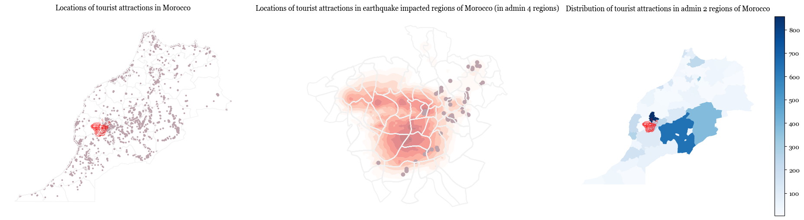

Damage to Financial Services and Points of Tourism#
Points of Interest data were obtained from OSM and Earthquake Intensity files were taken from USGS. These data were juxtaposed to identify the buildings that would have seen the most amount of damage. Only the regions with earthquake intesnity on the mmi scale >7 are considered within this analysis.
Assumptions & Limitations#
Data from OpenStreetMaps is crowdsourced and is not frequently updated. Therefore, the points identified may be wrongly counted in some locations. The assumption made is that any area which withstood earthquke intensity greater than 7 on the mmi scale would have taken damage.
Findings#
Show code cell source
percent_financial_services_in_affected_region = round(100*len(affected_regions.sjoin(financial_services)['osm_id'].unique())/len(financial_services['osm_id'].unique()),2)
number_financial_services_in_affected_region = len(affected_regions.sjoin(financial_services)['osm_id'].unique())
print(f'{percent_financial_services_in_affected_region}% (i.e., {number_financial_services_in_affected_region}) of financial services across the country are in the regions affected by the earthquake. These services include {financial_services_list}')
0.45% (i.e., 17) of financial services across the country are in the regions affected by the earthquake. These services include ['bank', 'post_office', 'bureau_de_change', 'atm', 'money_transfer']
Show code cell source
import matplotlib.pyplot as plt
import matplotlib
fig, axs = plt.subplots(2,2, figsize = (18,12))
ax = axs.flatten()
matplotlib.rcParams['font.family'] = 'Georgia'
affected_regions.boundary.plot(ax=ax[0], color = 'red', linewidth = 0.5, alpha = 0.5)
financial_services.plot(ax=ax[0], color = '#8F9491', markersize = 3)
morocco_adm2.boundary.plot(color = '#f2f2f2', ax=ax[0], linewidth = 0.8)
ax[0].set_title('Locations of financial services in Morocco', pad=20, fontsize = 12)
ax[0].axis('off')
morocco_adm4.sjoin(affected_regions).boundary.plot(ax=ax[1], color = '#f2f2f2')
affected_regions.plot(column = 'PARAMVALUE', ax=ax[1], cmap = 'Reds', alpha = 0.5)
financial_services[financial_services['osm_id'].isin(affected_financial_services)].plot(ax=ax[1], color = '#8F9491')
ax[1].set_title('Locations of financial services in earthquake impacted regions of Morocco (in admin 4 regions)', pad=10, fontsize = 12)
ax[1].axis('off')
financial_services_adm2 = morocco_adm2.sjoin(financial_services).groupby(['NAME_2']).count()[['osm_id']].reset_index()
morocco_adm2.merge(financial_services_adm2).plot(column = 'osm_id', legend = True, ax = ax[2], cmap = 'Blues')
ax[2].set_title('Distribution of financial services in admin 2 regions of Morocco', pad = 50, fontsize = 12)
#ax[2].legend(loc = 'center left', bbox_to_anchor=(1,0.5))
ax[2].axis('off')
affected_population_adm4.plot(column = 'population_without_children', legend = True, ax=ax[3], cmap = 'Greens')
ax[3].set_title('Population in affected admin 4 regions', pad=10, fontsize = 12)
ax[3].axis('off');
Show code cell source
financial_services['affected'] = financial_services['osm_id'].apply(lambda x:get_affected(x, affected_financial_services))
financial_services_adm4 = morocco_adm4.sjoin(financial_services)
financial_services_adm2 = morocco_adm2.sjoin(financial_services)
financial_services_adm2 = financial_services_adm2.groupby(['NAME_1', 'NAME_2']).agg({'osm_id':'count', 'affected':'sum'}).reset_index()
financial_services_adm2['percent_affected'] = 100*financial_services_adm2['affected']/financial_services_adm2['osm_id']
financial_services_adm2[financial_services_adm2['percent_affected']>0]
| NAME_1 | NAME_2 | osm_id | affected | percent_affected | |
|---|---|---|---|---|---|
| 18 | Marrakech - Tensift - Al Haouz | Al Haouz | 21 | 14 | 66.666667 |
| 19 | Marrakech - Tensift - Al Haouz | Chichaoua | 7 | 2 | 28.571429 |
| 22 | Marrakech - Tensift - Al Haouz | Marrakech | 196 | 1 | 0.510204 |
Show code cell source
percent_tourist_attractions_in_affected_region = round(100*len(affected_regions.sjoin(tourist_attractions)['osm_id'].unique())/len(tourist_attractions['osm_id'].unique()),2)
number_tourist_attractions_in_affected_region = len(affected_regions.sjoin(tourist_attractions)['osm_id'].unique())
print(f'{percent_tourist_attractions_in_affected_region}% (i.e., {number_tourist_attractions_in_affected_region}) of tourist attractions across the country are in the regions affected by the earthquake. These services include {tousit_attraction_list}')
1.33% (i.e., 74) of tourist attractions across the country are in the regions affected by the earthquake. These services include ['viewpoint' 'attraction' 'camp_site' 'guest_house' 'information' 'hotel'
'artwork' 'caravan_site' 'hostel' 'yes' 'museum' 'apartment' 'motel'
'alpine_hut' 'chalet' 'camp_pitch' 'picnic_site' 'theme_park'
'wilderness_hut' 'gallery' 'zoo' 'hotel;camping' 'camp_site;hotel'
'hotel;camp_site' 'monument' 'lean_to' 'guest_house;hotel;camp_site'
'wiewpoint' 'cascade' 'guest_house;hotel' 'water_point' 'spa_resort'
'guest_house;camp_site']
Show code cell source
import matplotlib.pyplot as plt
import matplotlib
fig, axs = plt.subplots(1,3, figsize = (24,6))
ax = axs.flatten()
matplotlib.rcParams['font.family'] = 'Georgia'
affected_regions.boundary.plot(ax=ax[0], color = 'red', linewidth = 0.5, alpha = 0.5)
tourist_attractions.plot(ax=ax[0], color = '#BCA3AC', markersize = 3)
morocco_adm2.boundary.plot(color = '#f2f2f2', ax=ax[0], linewidth = 0.8)
ax[0].set_title('Locations of tourist attractions in Morocco', pad=20, fontsize = 12)
ax[0].axis('off')
morocco_adm4.sjoin(affected_regions).boundary.plot(ax=ax[1], color = '#f2f2f2')
affected_regions.plot(column = 'PARAMVALUE', ax=ax[1], cmap = 'Reds', alpha = 0.5)
tourist_attractions[tourist_attractions['osm_id'].isin(affected_tourist_attractions)].plot(ax=ax[1], color = '#BCA3AC')
ax[1].set_title('Locations of tourist attractions in earthquake impacted regions of Morocco (in admin 4 regions)', pad=10, fontsize = 12)
ax[1].axis('off')
affected_regions.boundary.plot(ax=ax[2], color = 'red', linewidth = 0.5, alpha = 0.5)
tourist_attractions_adm2 = morocco_adm2.sjoin(tourist_attractions).groupby(['NAME_2']).count()[['osm_id']].reset_index()
morocco_adm2.merge(tourist_attractions_adm2).plot(column = 'osm_id', legend = True, ax = ax[2], cmap = 'Blues')
ax[2].set_title('Distribution of tourist attractions in admin 2 regions of Morocco', pad = 50, fontsize = 12)
ax[2].axis('off');
